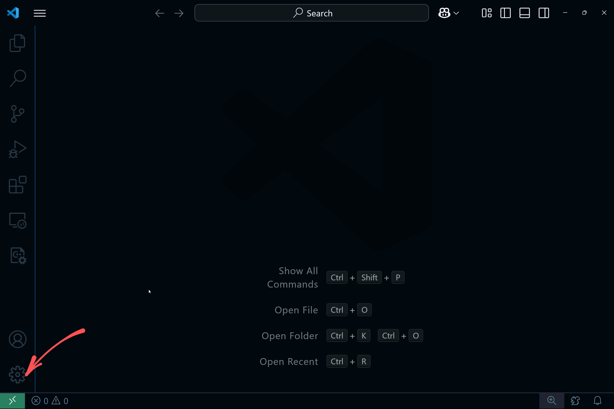
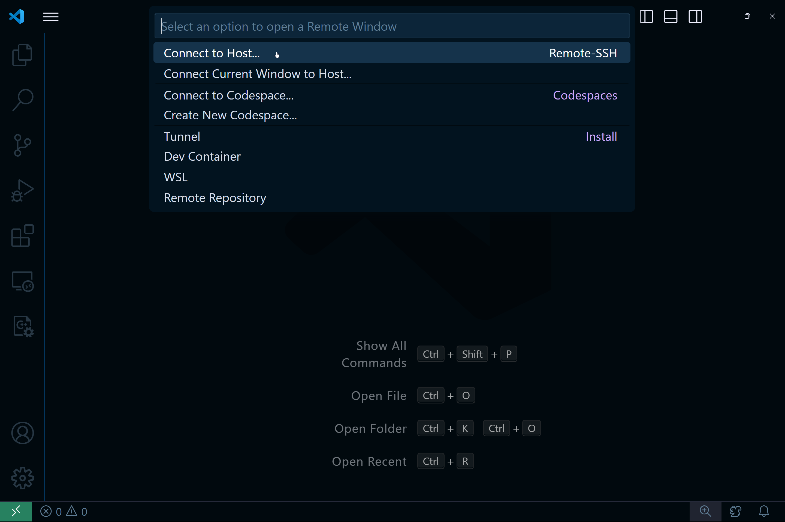
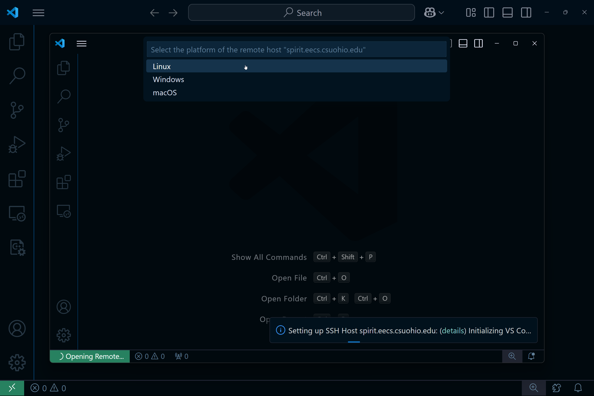
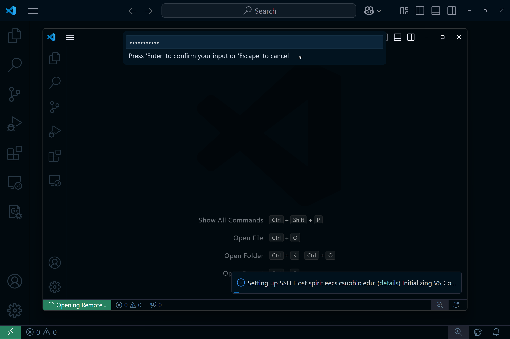
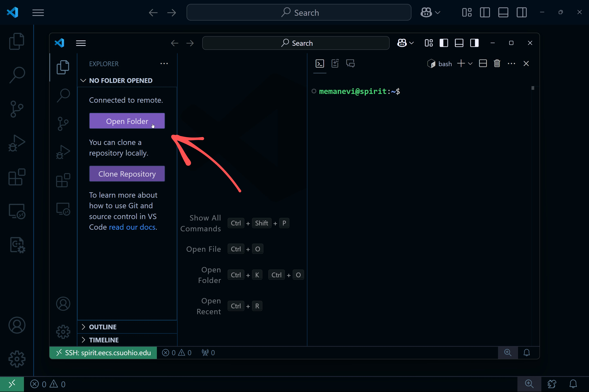
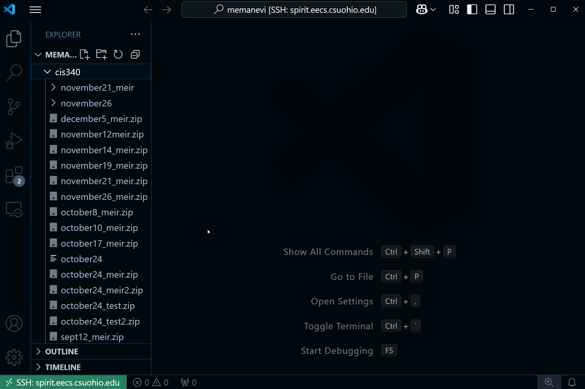
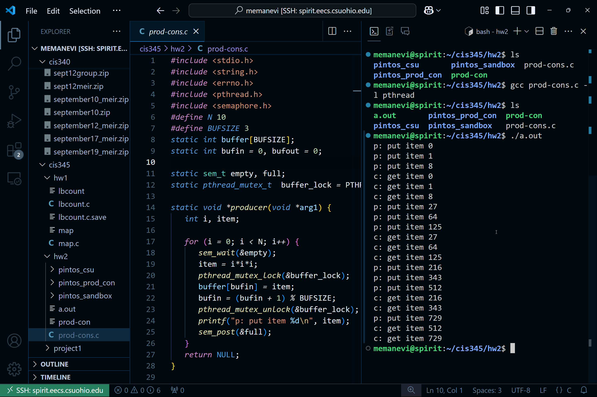
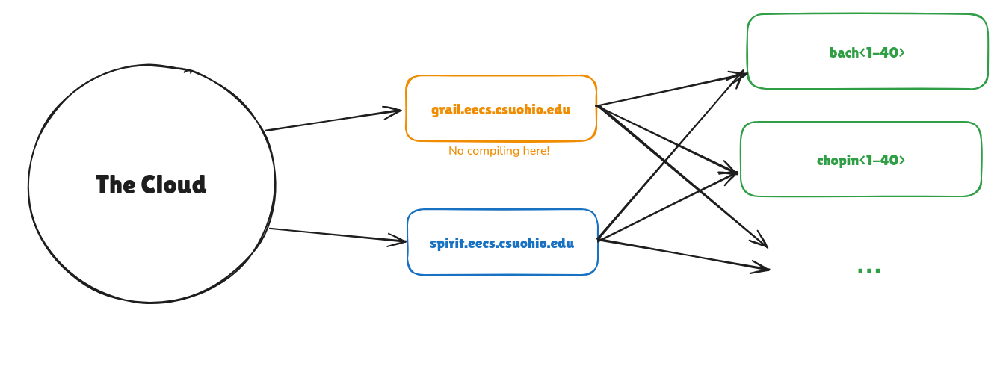
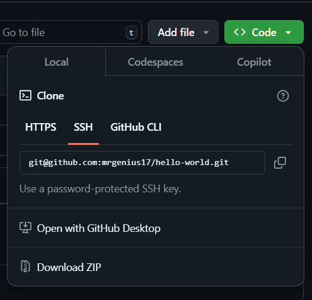

Introduction
This book is written for less experienced Computer Science students who are interested in learning more about tools that are commonly used in the industry. And, among those commonly used tools, two stand out because of the sheer scale of their adoption: Linux and git.
Because of their adoption, essentially ever developer (unless they are working on a legacy code base) will use these technologies on a daily basis. For this reason, and because knowledge of Linux is required for upper level classes at the Washkewicz College of Engineering at CSU (like C Programming and Operating Systems), we, the Computer Peer Teachers (CPTs), have decided to offer a short introductory workshop on both of these topics. This is the accompanying book for that workshop.
During this workshop, we seek to answer the following questions for Linux:
- What is Linux?
- What is a Linux distribution ("distro")?
- What is a Desktop Environment?
- Why should I care about Linux?
- How do you install popular Linux distros like Ubuntu, Debian, Mint, Fedora, and others?
- How to use the terminal
And for git:
- What is git?
- Why is it important? What are the use cases?
- How do you install git (on Windows, MasOS, and Linux)?
- How do you use git from the terminal?
- Git in VSCode
Workshop Recording
What is Linux?
Linux, or (more technically) GNU/Linux, is an open source operating system (or family of operating systems) created by Linus Torvalds in 1991. It has two main parts: the linux kernel, which interacts with the hardware, manages memory and processes, and does many other low-level tasks, and the user-land programs, which run on top of the kernel. User-land programs are supported by a set of system libraries. The most popular set of system libraries is the GNU C Library (hence the name GNU/Linux).
More info: https://en.wikipedia.org/wiki/Linux
However, you need more than just the kernel and set of system libraries to create a useful operating system setup. This is where Linux distributions comes in.
What is a Linux distribution?
A Linux distribution (or "distro") is a collection of software that is bundled with the linux kernel (and often the GNU C Library) in order to provide a more complete operating system experience. This software bundle almost always include a package manager and a shell, and sometimes includes a graphical user interface (GUI). These distros are also characterized by how often they are updated. Some distros focus on stability, releasing twice a year, while others focus on the latest features, releasing ever one or two months (with package managers that update packages as often as possible).
There are many different operating systems for many different purposes, but some of the most popular ones are:
- Ubuntu
- One of the most popular Linux distributions
- Focused on stability, with updates every 6 months
- Based on Debian
- Debian
- Another very popular Linux distribution
- Uses the Debian package manager and Apt
- Fedora
- Mint
- Arch
- One of the most popular rolling-release Linux distribution
- Uses the pacman package manager
- For more advanced users, since it doesn't come with default desktop environment
- Manjaro
- Based on Arch
- Kali Linux
- Based on Debian
- Includes many cyber security tools
- Tails
- An ephemeral Linux distribution, used only on live boot USBs
More info: https://en.wikipedia.org/wiki/Linux_distribution
What is a Desktop Environment?
A desktop environment is a graphical user interface (GUI) that provides users with a way to interact with the operating system. It handles all graphical program windows, menus, and icons, along with the taskbar and other desktop widgets. A few popular desktop environments include:
- GNOME
- KDE
- Xfce
- MATE
- Cinnamon
More info: https://en.wikipedia.org/wiki/Desktop_environment
Most linux distributions meant for desktop use come with a pre-installed desktop environment. For example, Ubuntu comes with GNOME while Kubuntu, a spinoff of Ubuntu, comes with KDE. It is important to note basically any linux distribution can be used with any desktop environment. In fact, some distro websites (like https://fedoraproject.org/spins/) provide a download for each popular desktop environment. Arch is somewhat unique in that it doesn't come with a desktop environment at all. Instead, users will need to install one after installing the distro itself.
Why should I care about Linux?
Because of Linux's quality and free licensing, it has become a popular choice for servers. In fact, "96.3% of the top one million web servers are running Linux" 1. That means that a strong majority developers need to develop products that run on Linux. Because of this and because Linux is free and flexible, many developers use Linux as their desktop operating system as well 1.
Since there is no escaping linux, we strongly encourage young developers to start learning it.
How to install Linux
Linux can be installed in a variety of ways, but it almost always starts with downloading the distribution's install ISO. Here are the links to a few common distros:
- Ubuntu: https://ubuntu.com/download/desktop
- Debian: https://www.debian.org/distrib/
- Kali Linux: https://www.kali.org/get-kali
- Linux Mint: https://www.linuxmint.com/download.php
- Fedora: https://fedoraproject.org/workstation/
Installing on a Physical Machine
Once you have downloaded the ISO, use a USB flashing program (any of the below) to write the ISO to a USB drive.
- Window: Rufus
- MacOS / Linux:
- Balena Etcher
- The
ddcommand command for experienced users
- Linux:
Once the USB drive is written, boot the machine from the USB drive (using a BIOS or UEFI boot menu) and follow the instructions provided by the distro's installer.
Installing on a Virtual Machine
Setting up a virtual machine is a great way to play with and learn Linux without having to install it on a physical machine. We recommend using Oracle VirtualBox for this purpose since it's free and open source. You can download it here: https://www.virtualbox.org/wiki/Downloads.
To setup a linux Virtual Machine (VM), follow this guide: https://ubuntu.com/tutorials/how-to-run-ubuntu-desktop-on-a-virtual-machine-using-virtualbox#1-overview. It's written for Ubuntu, but the steps for booting from the ISO image should be almost identical for other distros.
Installing via WSL (no ISO) (Windows only)
For Windows computers with Windows 10 or 11, this is an easy way to use the Ubuntu terminal on top of your system without partitioning your hard drive or using a virtual machine. Windows essentially treats it like another program on the computer, so you run it anytime you like from the Start Menu or from the terminal drop-down menu.
- To install WSL, open the terminal in administrator mode and execute:
wsl --install - Once it is installed, restart, and then you can then go ahead and set up our Linux username and password when it comes back up
- Once you are signed into to your Ubuntu account, update and upgrade the system
sudo apt update && sudo apt upgrade -y - Close the window
- You can now access Ubuntu
- from the Start menu by selecting/searching for WSL or Ubuntu
- by opening the terminal and running the command:
orwslubuntu- run the
exitcommand to return to the windows terminal
- run the
- by selecting Ubuntu from the dropdown menu at the top of the terminal window
- Now that it is all set up, you access and manipulate all the files on your computer using Ubuntu
- This can be very useful for testing C code that needs to run on the CSU Linux computers for homework.
Using the Linux Terminal
The Linux command line is a text interface to your computer. Often referred to as the shell, terminal, console, prompt or various other names, it can give the appearance of being complex and confusing to use. However, the basics are actually quite simple and easy to learn.
Side note: If you are interested in learning more about the history of the terminal, read Section 1.2.1 for more information.
Accessing the Terminal Over SSH
Most of you are probably running Windows or MacOS on your personal computer, so you will need to access a linux terminal remotely using a Secure Shell (SSH) connection. On Windows, you can do this using MobaXTerm, PuTTY, or WinSCP. Read Section 1.3 for more information on how to access CSU's Linux servers.
Using Google Cloud Shell
You also have the option of using Google Cloud Shell, which is free. Simply go to https://shell.cloud.google.com/. After the shell is provisioned, you should see the environment below:

Your linux shell should be available at the bottom of the page.
Running your First Command
To run your first command, click inside the terminal window to ensure it's active, then type the following in lowercase and press Enter:
pwd
This will display your current directory path (likely something like /home/YOUR_USERNAME), followed by the prompt text again.
The prompt indicates the terminal is ready for your next command. When you see references to "command prompt" or "command line," they simply mean the place where you type commands in the terminal.
When you run a command, any output will typically appear in the terminal. Some commands display a lot of text, while others may not show anything if they complete successfully. If a new prompt appears right away, the command likely succeeded.
Navigating the Linux Environment
The Linux Essentials
-
The
pwdcommand (print working directory) shows your current location in the file system. The working directory is where file operations take place by default unless specified otherwise. To check where you are, usepwd. -
To see other directories available from the directory that you are in, use
ls. -
To autocomplete a directory or filename, type the first couple letters and then hit
tab. If there are multiple files that start with those letters, nothing will happen, hittabagain and it will show all the available files that start with those letters. -
A quick way to run similar commands to the one you just ran is to hit the up arrow, which will autofill the previous command, and then you can make a small change and run it again. The up arrow accesses a history of all the commands you've used recently, so you can keep hitting it to see previous commands.
-
Pressing
ctrl+cat any time will interrupt the current execution, if there is any, and return to the command line. This is useful for running C programs, especially if you run into an infinite loop. Just executectrl+cand it will stop.
To change the working directory, use cd (change directory):
-
Move to the root directory:
cd / pwd -
Move to the "home" directory from root:
cd home pwd -
Go up one level to the parent directory:
cd .. pwd -
Just one
.is used to refer to the current directory. This will be useful later on when we are moving files between directories. -
To return to your home directory (also represented by the
~path):cd pwd
You can also move up multiple levels:
cd ../..
pwd
To go directly to the "etc" directory from your home directory:
cd # this is same as cd ~
cd ../../etc
pwd
Paths can be relative (depending on your current directory) or absolute (starting with /).
Most examples so far have used relative paths, meaning the location you navigate to depends on your current directory. For instance, moving to the "etc" directory works from the root:
cd /
cd etc
But if you're in your home directory and try cd etc, you'll get an error because the command is relative to your current location.
Absolute paths, however, work regardless of your current directory. These paths start with a /, indicating the root directory. For example:
cd /etc
This will always take you to the "etc" directory, no matter where you are. Similarly, running cd alone returns you to your home directory. Another absolute path shortcut is using ~, which refers to your home directory:
cd ~
cd ~/Desktop
Creating and Opening Folders and Files
To safely experiment with files, let's create a directory away from your home folder:
mkdir /tmp/tutorial
cd /tmp/tutorial
This creates a new directory, "tutorial," inside /tmp using an absolute path. Now, let's create a few subdirectories:
mkdir dir1 dir2 dir3
This command creates multiple directories at once. If you'd like to create nested directories, use the -p option (short for "make all Parent directories"):
-pis what is called an "option". Most linux commands have options, ways to customize the implimentation or scope of the execution of that command. To see a list of all of the options associated with any command, type that command followed by--helpand you will get a list of the available options along with a brief description of each.mkdir --help
mkdir -p dir4/dir5/dir6
Here, -p ensures parent directories (dir4 and dir5) are created if they don't exist.
To create folders with spaces in the names, use quotes or a backslash to escape the space:
mkdir "folder 1"
mkdir folder\ 3
Avoid spaces in file names where possible by using underscores or hyphens for easier command-line use.
Listing and Creating Files
Let's create some files and work with them. Start by listing the contents of your current directory:
ls
To capture the output of this command into a file, use redirection (>):
ls > output.txt
This creates a file called output.txt with the list of directory contents. To view the file:
cat output.txt
The echo command can also create files with content:
echo "This is a test" > test_1.txt
echo "This is a second test" > test_2.txt
echo "This is a third test" > test_2a.txt
You can view their contents using cat. To combine multiple files:
cat test_1.txt test_2.txt test_2a.txt > combined.txt
cat combined.txt
Wildcards simplify commands when file names follow patterns.
?will accept any filename with just one character that follows that pattern before the?- So using just
?will grabtest_1andtest_2but nottest_2a
- So using just
*will accept any filename with any amount of characters that follows the pattern before it, so long as it begins with the preceding name.- This will grab all three files, since they all follow the same initial pattern
cat test_?.txt
cat test_*
If you want to append text to an existing file, use >>:
echo "Appending a line" >> combined.txt
cat combined.txt
To view long files one page at a time, use less:
less combined.txt
You can navigate each line using arrow keys, or b and spacebar to go up down entire pages, and exit with q. This basic workflow helps in creating and managing files with content efficiently.
Vim & Nano
These tools are complex enough to deserve entire pages of their own, but just to get your toes wet, if you'd like to properly edit files in the terminal, you can do so using the nano or vim commands. These commands will start the nano or vim programs, and you will not be able to use normal linux commands. Don't panic!
nano combined.txt
or
vim combined.txt
- To exit nano, hit
ctrl+x - To exit vim, type
:qand thenenter
Case Sesitivity
Unix systems are case-sensitive, meaning files like A.txt and a.txt are treated as entirely different. For example:
echo "Lower case" > a.txt
echo "Upper case" > A.TXT
echo "Mixed case" > A.txt
This creates three distinct files. It’s best to avoid file names that only differ by case to prevent confusion, especially when transferring files to case-insensitive systems like Windows. There, all three names would be treated as the same file, which could lead to data loss.
Rather than relying on upper case names (which would require frequent Caps Lock toggling), many users stick to lower case file names. This prevents case-related issues and keeps typing consistent with most shell commands, which are lower case. This habit helps avoid complications and reduces the chances of filename collisions.
Nope, don't wanna Shout.
A good practice for file naming on Unix systems is to use only lower-case letters, numbers, underscores, and hyphens. File names typically include a dot followed by a few characters as the file extension (e.g., .txt, .jpg). Sticking to this pattern avoids issues with case sensitivity and escaping, and simplifies command-line usage. Although it may seem limiting, this approach will save time and prevent errors when working in the terminal regularly.
File Manipulation
Moving Files:
- To move a file into an existing directory:
mv combined.txt dir1 - You cannot move files into a directory that does not exist yet! You must first use
mkdirto create the directory for which you'd like to move your file to - To move the file back to the current directory:
mv dir1/combined.txt . - We can use the
*character to move everything from one directory to another:mv dir1/* .
Moving Multiple Files:
- To move several files and directories at once:
mv combined.txt test_* dir3 dir2
Moving Across Nested Directories:
- To move
combined.txtfrom one directory to another nested location:mv dir2/combined.txt dir4/dir5/dir6
Copying Files:
-
To copy a file from one location to the current directory:
cp dir4/dir5/dir6/combined.txt . -
To create a copy with a different name:
cp combined.txt backup_combined.txt
Renaming Files:
- To rename
backup_combined.txttocombined_backup.txt:mv backup_combined.txt combined_backup.txt
Renaming Directories:
- To rename directories (use the Up Arrow for quicker edits):
mv "folder 1" folder_1 mv "folder 2" folder_2
Use ls to verify the results of each operation. These commands help manage files and folders efficiently without needing to change directories or use the mouse.
Deleting Files:
- To delete files:
rm dir4/dir5/dir6/combined.txt combined_backup.txt
Deleting Directories:
- To delete directories, use
rmdirfor empty folders:
rmdir folder_*
- If a directory contains files or subdirectories,
rmdirwill fail. To delete non-empty directories, usermwith the recursive-roption:
rm -r folder_6
This is a quick and efficient way to clean up files and folders without unnecessary repetition.
Safety Warning
When using the rm command, be extremely cautious, as it permanently deletes files without moving them to a trash folder. Accidental deletions can easily occur, especially when using wildcards. For example, rm t* deletes all files starting with "t," while rm t * could delete everything in the directory.
To prevent unintended deletions, consider using the -i (interactive) option with rm. This option prompts you to confirm each deletion, allowing you to type Y to delete, N to keep, or Ctrl-C to cancel the operation. Always double-check your commands before executing them to avoid irreversible loss.
Recursive Deletion:
Be especially cautious when using rm -r, as it will delete everything within the directory, including all files and subdirectories. It’s often safer to explicitly delete files first and remove the directory afterward.
Piping
Modern computers and phones have advanced capabilities, yet text remains crucial for organizing files, from filenames to metadata. The Linux command line offers powerful tools for text manipulation, particularly through piping, which allows the output of one command to feed directly into the input of another.
Piping examples:
- Count Files in a Directory:
To count the number of lines in an output without creating a temporary file (which is required for
>redirection), use:
So here,ls | wc -llsreturns a list of all the files in your current directory, and then sends that list towc -l, which counts the lines of text, which will be the number of items in your directory. - View Large Outputs:
For lengthy outputs, use
less:
Again, output ofls | lesslsgoes toless - Find Unique Lines:
To count unique lines in
combined.txt, chain commands:
This will not remove all duplicates, becausecat combined.txt | uniq | wc -luniqonly removes adjacent duplicates. - Sort Before Uniquing:
To prepare for using
uniq, sort the file first, which will put all duplicates next to each other:sort combined.txt | uniq | wc -l - Searching for a string in an input:
To search for a string in a file, use
grep:cat combined.txt | grep "string" - Check Command Documentation:
Use the
mancommand for the manual, or the full details on how commands work:man uniq
Origin of the Linux Terminal
During the early development of the computer industry, Unix emerged as a multi-user operating system for mainframe computers. Users connected remotely via basic terminals, which featured only a keyboard and screen, sending keystrokes to the server and receiving text-based outputs. Programs had to handle text input and output due to the lack of graphical interfaces.
Text is resource-light, enabling users to interact efficiently with programs even over slow network connections. The command structure was concise to minimize keystrokes, contributing to the continued popularity of text interfaces.
Unix users managed file operations such as creating, renaming, and organizing files using a textual interface. Each task required specific commands (e.g., cd for changing directories and ls for listing contents). These commands were coordinated by a master program known as the “shell,” which also allowed for command chaining and automation through shell scripts. The original Unix shell, sh, has evolved into modern shells like bash.
Linux is a descendant of Unix, designed to function similarly, allowing many old Unix programs to run effectively. While old terminals could connect to modern Linux systems, it is more common to use software terminals that provide a Unix-style text interface alongside graphical programs.
Editing your files on Grail through VS Code
You can edit files that are on the CSU Linux computers directly through VS Code, instead of editing locally and then using scp each time you want to upload them.
Accessing SSH through VS Code
Open VS Code and click on the "Open a Remote Window" button on the bottom left: 
Then select the "Connect to Host" option: 
Type in your CSU Linux ssh path username@spirit.eecs.csuohio.edu and hit enter.
This will open a new window and you will be prompted to choose the operating system. Select Linux:

Enter your password: 
And you should be in! Next, select "Open Folder": 
Your home directory should autopopulate. Click the OK button and enter your password again, and allow VS Code to trust the authors if prompted. You should now have access to all of your files on CSU's Linux computers, with some new files there for VS Code to work: 
You can now edit any file by just selecting it through the file explorer on the left, and you can hit ctrl+~ to open the terminal, which will be the spirit terminal, on which you cann compile and run your programs using gcc as you make changes in the editor:

How to Submit Assignments using SSH on Windows
Several of the Computer Science classes at Cleveland State University use the custom turnin command available on the grail.eecs.csuohio.edu server to turn in assignments.
On Windows, we recommend using Mobaxterm as your SSH client. We also provide guides for using PuTTY and WinSCP.
Guides
- How to Submit Assignments using Mobaxterm on Windows
- How to Submit Assignments using PuTTY on Windows
- How to Submit Assignments using WinSCP on Windows
Reference
CSU Linux Servers' User Account Format
If you are taking a CIS course this semester that requires Linux, you should have access to CSU's Linux servers. To login, use the following format for your credentials:
Username: <first two letters of your first name (lowercase)><first six letters of your last name (lowercase)>
Password: <CSU ID><first letter of your last name (uppercase)>
Warning:
Because your CSU ID is known by instructors and many other staff, you MUST change your password after the first time you log in.
Example
For John Doe with a CSU ID of 1234567:
Username: jodoe (since "Doe" is only 3 letters, we simply use those 3 letters)
Password: 1234567D
CSU Linux Server Layout
CSU's Linux servers have the following networking layout:

Warning:
You may not compile or run any of your own programs on Grail.
To access any of the servers "behind" grail and spirit, ssh into grail first, then ssh into the desired server. For example, to access chopin12, use these commands:
ssh jodoe@grail.eecs.csuohio.edu
ssh chopin12
To see a list of all the CSU Linux computers available on CSU's network, ssh into grail, and then execute:
cat /etc/hosts
How to Submit Assignments using MobaXterm on Windows
Guide
Downloading
Go to https://mobaxterm.mobatek.net/
Click “Get MobaXterm Now!”
Click “Download now” on the Home Edition
Click the green “MobaXterm Home Edition vxx.x (Installer edition)”
Move the .zip file to an empty folder, right click it, click “Extract All...”, and click “Extract”
Run the .msi file
Click “Next”
Accept the terms and click “Next”
Click “Next”
Click “Install” and wait for it to install
Click “Finish”
Copying the assignment over
Run the .exe file
Click on “Session” in the top left
Click “SSH” in the new window
In “Remote host”, enter “grail.eecs.csuohio.edu”
Enable “Specify username” and input your school Linux username. Your default user name should be the first 2 letters of your first name, followed by the first 6 letters of your last name. You might have a different user name depending on the length and popularity of your names. You should have gotten an email with your user name and password for your account. If you did not receive one, ask your instructor for assistance
Click “OK”
In “Password”, enter your student ID followed by the first letter of your last name, capitalized (ex. 1234567A)
Decide whether to save your password or not
You are now connected to the grail server. From here, it is recommended that you click the folder button “Create new directory” to create a new folder for you class (for organization)
To copy a file from your home computer to the server, simply drag it into the list on the left and it will automatically copy over
Turning the assignment in
Once the file has been copied over, navigate to the directory that you put it in
To navigate, type “cd directory_name” to go into a directory, or “cd ..” to go out of a directory
When you are in the directory with the file you wish to turn in, type the turnin command that your instructor has told you to use. If you are unsure of this command, ask your instructor
You should see a line in the terminal saying “Your files have been submitted to ‘class, homework’ for grading” indicating a successful turnin
How to Submit Assignments using PuTTY on Windows
oGuide
Downloading
Go to https://www.putty.org/
Click “Download PuTTY”
In the “Package files” section, download the .msi file next to “64-bit x86”
Wait for the .exe to download, then run it
Click “Next”
Click “Next”
Make sure “Put install directory on the PATH for command prompts” is selected, then click “Install”
Click “Allow” if it asks to make changes on your device
Click “Finish”
Go to where it was installed and run putty.exe (or click the desktop icon if you chose that option) AND run pscsp.exe
Copying the assignment over
Before turning in, you must copy your file to the remote server
To do this, click on the Windows search bar and find “Command Prompt”. Open it
Make sure the file you wish to transfer over is on your desktop
Type “pscp “C:\Users\user\Desktop\file.extension” username@grail.eecs.csuohio.edu:”
In the above command, “user” should be your Windows user file name, “file.extension” should be the file you wish to turn in, and “username” should be your school Linux username (first 2 letters of your first name, followed by the first 6 letters of your last name is the usual student user name)
You might have a different user name depending on the length and popularity of your names. You should have gotten an email with your user name and password for your account. If you did not receive one, ask your instructor for assistance
For your password, type your student ID followed by the first letter of your last name, capitalized (ex. 1234567A), then press enter. You will not see your password as you type it – this is intended
The file should be successfully transferred over. Now go back to the putty.exe program that opened
Turning the assignment in
In “Host Name (or IP address)”, enter “grail.eecs.csuohio.edu” and click “Open”
Click “Accept”
Type your user name
Type your password
You should now be connected to grail. Type "ls” to check if your file was properly copied over
Type the turnin command that your instructor has told you to use. If you are unsure of this command, ask your instructor
You should see a line in the terminal saying “Your files have been submitted to ‘class, homework’ for grading” indicating a successful turnin
How to Submit Assignments using WinSCP on Windows
Guide
Downloading
Go to https://winscp.net
Click the green “Download Now”
Click the green “Download WinSCP x.x.x (xx MB)”
Wait for the .exe to download. If it does not download, click the green “Direct Download”
Run the .exe
Select install mode “Install for me only”
“Accept” the License Agreement
Select setup type “Typical installation (recommended)” and click “Next”
Select your preferred user interface style (this guide will assume you chose Commander) and click “Next”
Click on “Install”
Let the program install. Click on “Finish”. This will launch WinSCP and open the “Getting started” page in your default browser
Copying the assignment over
You will be prompted with a “Login” screen
In “Host name”, enter “grail.eecs.csuohio.edu”
In “User name”, enter the first 2 letters of your first name, followed by the first 6 letters of your last name. This is the default user name for students. You might have a different user name depending on the length and popularity of your names. You should have gotten an email with your user name and password for your account. If you did not receive one, ask your instructor for assistance
In “Password”, enter your student ID followed by the first letter of your last name, capitalized (ex. 1234567A)
Click “Save”, then click “OK” (this will let you easily enter grail again during later sessions)
Click “Login”
Enter your password again and click “OK”
Click “Accept”
The left side is your home computer directory. Navigate to the file you want to transfer over. The “..” folder takes you up one directory
Once you have located the file, drag it from the left side and drop it on the right side. Alternatively, you can locate the file on your computer without WinSCP, then drag and drop it from your computer to the right side
Before copying over, you might want to create a folder on your remote account to keep it organized. To do this, click the “New” button above the right side, click “Directory...”, choose a name for the folder, then click “OK”
Once the file has been copied over, you are now ready to turn it in
Turning the assignment in
On the right side, navigate to the folder you put your file in
Click on the black “Open terminal” button near the top of the program
Click “OK” if it asks “Do you want to open a separate shell session?”
In the “Enter command” box, type the turnin command that your instructor has told you to use. If you are unsure of this command, ask your instructor
You should see a line in the terminal saying “Your files have been submitted to ‘class, homework’ for grading” indicating a successful turnin
What is git?
Git is a distributed version control system (VCS) that helps developers track and manage changes in their code over time. With Git, every time you commit, or save the state of your project, Git basically takes a picture of what all your files look like at that moment and stores a reference to that snapshot. To be efficient, if files have not changed, Git doesn’t store the file again, just a link to the previous identical file it has already stored. Git thinks about its data more like a stream of snapshots. 1
This may seem innocuous, but it's actually vital to the development cycle. Virtually all professional code is managed by some VCS, and git is by far the most common.
Terms to know
- Repository (Repo): A directory or storage space where your project lives, including all files and version history tracked by Git. Your local repository is your project’s history stored on your computer. A remote repository is a version of your project hosted on the internet or network.
- Working Directory: The directory on your local machine where you modify files before tracking them with Git
- Commit: A snapshot of your repository at a specific point in time, including all staged changes.
- The Three States: Git has three main states that your files can reside in: modified , staged , and committed
- Modified means that you have changed the file but have not committed it to your database yet.
- Staged means that you have marked a modified file in its current version to go into your next commit snapshot.
- Committed means that the data is safely stored in your local database.
 https://git-scm.com/book/en/v2/Getting-Started-What-is-Git
https://git-scm.com/book/en/v2/Getting-Started-What-is-Git
- Branches: branches are parallel versions of your project. They allow you to work on different features or fixes independently without affecting the main project until you’re ready to merge them back.
- Pull Request: a pull request is a way to propose changes from one branch to another. It’s a request to review, discuss, and possibly merge the changes into the target branch, and is often used in team collaborations.
- Merge: merging is the process of integrating changes from one branch into another. It combines the histories of both branches, creating a single, unified history.
Use cases
Tracking file changes over time
Have you ever been scared to work on your code after completing a feature because you didn't break it? Git fixes this by allowing you to take a snapshot (or "commit") of your code, which you can always go back to by running a single command (git checkout ... or git reset ...).
Making multiple commits (best practice is a commit for each feature) throughout the progression of a project allows you to revert at any time to any "milestone." You'll never lose your work again2.
Working on different versions of your code at the same time
Git branches allow you to work on multiple versions of your code base at the same time. For example, if you want to maintain an old, released version (e.g. adding security patches) while continuing feature development for the latest version, you could create a branch called v1.0.0 and a branch called dev.
By default, git repositories have one branch named master or main. This is often used either for development or for the latest stable version of the software.
Code collaboration
Branches (or forked repositories on a platform like GitHub) can be used by multiple developers to collaborate on the same code base. Usually, each developer works on their own branch and implements a feature. Once that feature is complete, they merge the branch into the main or master branch.
Storing code remotely
Git can be used with platforms like GitHub or GitLab to manage code stored in the cloud. This is an important part of the modern development cycle.
Typically, a developer creates a branch, implements their feature (or reaches some stopping point), and then commits their changes. After they commit their changes, they push it up to the server hosting the main code base so that others can access it.
For smaller projects, developers may skip the "creating a branch" step and commit new code directly to the main branch.
https://git-scm.com/book/en/v2/Getting-Started-What-is-Git%3F
Unless you delete or lose the git repository itself, or manually delete commits.
How to Install git
Windows
-
Go to the latest Git Windows installer and download the latest version.
-
Follow the instructions as provided by the installer wizard.
MacOS
There is a good chance it is already installed on your machine. Try running this command to check
git --version
If it is not installed, it will prompt to install the Command Line Tools. Click "Install" in the pop-up window.
Once finished, the Git version will be displayed in the Terminal, confirming a successful installation.
Linux
Install it using your favorite package manager.
Debian / Ubuntu (apt)
sudo apt-get install git-all
Fedora (dnf)
sudo dnf install git
Arch (pacman)
sudo pacman -S git
For other Linux distros you can use the same name for the package git-all
After the installation
Make sure git is installed correctly by opening your terminal and run:
git --version
If it is installed correctly, you should see:
git version <version-number>
Next, you should verify that Git is configured properly by setting up your name and email. To check if you have already configured Git, navigate to the terminal and run:
git config --global --list
If Git has been configured, the terminal will return your set username and email. If this is not the case, you need to configure Git by completing the following:
To set your name run:
git config --global user.name <your name>
To set your email run:
git config --global user.email <your email>
This information is required to use Git and must be entered before committing any of your changes. For additional information regarding Git setup and initial requirements, view the official Git documentation.
Creating a GitHub Account
GitHub is a web-based platform that uses Git for version control, allowing you to store, manage, and collaborate on code projects. Follow these steps to create an account:
- Go to GitHub: Open your web browser and navigate to GitHub.
- Sign Up: Click on the Sign Up button in the top-right corner.
- Enter Your Details: Provide a username, email address, and password.
- Verify Your Account: Complete the CAPTCHA challenge and click Create account.
- Check Your Email: GitHub will send a verification email. Open it and click the confirmation link.
- Choose a Plan: You can select the free plan or a paid plan with additional features.
- Customize Your Experience (Optional): GitHub may ask questions about your experience level and interests. Answer them or skip this step.
Once completed, you now have a GitHub account and can start creating repositories to manage your code.
Creating Your First Repository
A repository (repo) is where your project files and version history are stored. Follow these steps to create your first repository on GitHub:
-
Log In: Go to GitHub and sign in to your account.
-
Create a New Repository: Click on the + icon in the top-right corner and select New repository.
-
Repository Name: Enter a name for your repository. It should be descriptive of your project.
-
Description (Optional): Provide a brief summary of what your project is about.
-
Choose Visibility:
- Public: Anyone can see your repository.
- Private: Only you and collaborators can access it.
-
Initialize the Repository (Optional): You can check Add a README file to create a default file that describes your project.
-
Choose a Git Ignore (Optional): Select a
.gitignoretemplate to automatically exclude common files that shouldn’t be tracked. -
Choose a License (Optional): Pick a license if you want to specify terms for using and sharing your code.
-
Create Repository: Click the Create repository button.
Your repository is now ready! You can start adding files, cloning it to your local machine, or collaborating with others.
Connect GitHub Account with your Local git with SSH Keys
Start the SSH Agent Service
Windows
In Powershell, start the ssh service:
Start-Service ssh-agent
Linux
In the terminal, check if the ssh service is running:
eval "$(ssh-agent -s)"
Generate SSH Key Pair
Run this command:
ssh-keygen -t ed25519
A password is not required, nor a file location. Keep hitting enter until a key is generated.
This creates a pair of keys:
- Private key:
~\.ssh\id_ed25519 - Public key:
~\.ssh\id_ed25519.pub
Add Private Key to SSH Agent
Run this command to add the private SSH Key to SSH Agent:
ssh-add ~/.ssh/id_ed25519
Get the Public Key Content
Print the public key content to the terminal and copy it:
cat ~/.ssh/id_ed25519.pub
Add the Public Key to your GitHub Account
- In the upper-right corner of any page on GitHub, click your profile photo, then click Settings.
- In the "Access" section of the sidebar, click SSH and GPG keys.
- Click New SSH key or Add SSH key.
- In the "Title" field, add a descriptive label for the new key. For example, if you're using a personal laptop, you might call this key "Personal laptop".
- Let the type of key selection be default, i.e. authentication.
- In the "Key" field, paste your public key.
- Click Add SSH key.
- If prompted, confirm access to your account on GitHub.
Test the Connection
Test the connection to github:
ssh -T git@github.com
Successful connection should say:
Hi <username>! You've successfully authenticated, but GitHub does not provide shell access.
Cloning a Repository Locally
To clone a repository locally, follow these steps:
- First, navigate to the directory where you want to clone the repository:
cd /path/to/your/directory - Get the repository URL:
- Go to the GitHub repository page.
- Click on the Code button.
- Under Clone, click on the SSH Tab, and copy the URL.

- Clone the repository by using the git clone command followed by the copied repository URL:
git clone https://github.com/username/repository-name.git - This will create a new folder with the repository name and download all files into it. You can then navigate into the cloned repository:
cd repository-name You can now work with the repository locally.
Using git
Creating a repository locally (Optional)
If you were not able to create a GitHub repository and clone it locally (described in Section 2.2), before you proceed, you will need to create a local git repository. You can do that by using the following commands:
mkdir my_repo
cd my_repo
git init
Staging
Once we made some changes we will want to commit them, before we can do that we want to stage the files. This is like another layer to saving your files. This is so if you have two files you changed but only one is ready to commit, you can select the file to stage.
To stage your file run this command:
git add file_name/folder_name
TIP:
use this command to see the changes made.
git status
Committing
Creating a commit creates a snapshot of all the staged files
TIP: For commit messages do you not use past tense, such as "I made headings blue". Use language like "Make headings blue", as if you are giving orders to the codebase.
This command creates a commit:
git commit -m "description of the commit"

A good way of visualizing how this works

Branches
Branches allow you to work on different versions of your project simultaneously without affecting the main codebase
From this main code you can create branches, this allows you to make changes without the chance of ruining the main code. Think of it as a copy of your code that you can now change with zero risks.
Use this command to create a new branch:
git checkout -b <name_of_the_branch>
To switch branches
git checkout <name_of_the_branch>

Merging branches and Pull Requests
This is how you create a Pull Request for your branch on GitHub:
- On GitHub, navigate to the main page of the repository.
- In the "Branch" menu, choose the branch that contains your commits.

- Above the list of files, in the yellow banner, click Compare & pull request to create a pull request for the associated branch.
- Use the base branch dropdown menu to select the branch you'd like to merge your changes into, then use the compare branch drop-down menu to choose the topic branch you made your changes in.
- Type a title and description for your pull request.
- To create a pull request that is ready for review, click Create Pull Request.
After you're done reviewing the code, you can then merge the two branches together.
To bring the latest changes in branch_a into main, we would first switch to the main branch...
git checkout main
and then run the git merge command.
git merge branch_a
If the files modified in main and branch_a (after branch_a was created or after the last merge) are mutually exclusive, then git should be able to do this automatically. However, if the same file was modified in both branches, you will probably encounter this:
CONFLICT (content): Merge conflict in my_file.txt
Automatic merge failed; fix conflicts and then commit the result.
Before you do anything else, you will need to fix the merge conflicts. Git represents these conflicts within each file using the following template (or something similar, if you've modified the default settings):
<<<<<<< HEAD
Change in the main branch
=======
Change in branch_a
>>>>>>> branch_a
To resolve this, replace the text above with the final desired version (it could be one or the other, or a combination of both). Once you've resolved all of the conflicts in (and saved) each file, stage the files and create a new commit. This completes the merge process.
Afterwards, you may delete branch_a.
git branch -d branch_a
Troubleshooting: Merging with remote branches
From github.com:gaverkov/mixed_volumes_proposal
* branch main -> FETCH_HEA
hint: You have divergent branches and need to specify how to reconcile them.
hint: You can do so by running one of the following commands sometime before
hint: your next pull:
hint:
hint: git config pull.rebase false # merge
hint: git config pull.rebase true # rebase
hint: git config pull.ff only # fast-forward only
hint:
hint: You can replace "git config" with "git config --global" to set a default
hint: preference for all repositories. You can also pass --rebase, --no-rebase,
hint: or --ff-only on the command line to override the configured default per
hint: invocation.
VS Code Git Integration
Visual Studio Code has integrated source control management (SCM) and includes Git support out-of-the-box. Here are a few good resources to reference on how to use it:
-
https://code.visualstudio.com/docs/sourcecontrol/overview
-
https://www.gitkraken.com/blog/vs-code-git
Cheat Sheet
Basic Linux Commands
SSH and File Transfer
SSH - Secure Shell
ssh [username]@[server].eecs.csuohio.edu
Allows you to remotely connect to a school server.
If outside the school Wi-Fi, you can only connect to spirit or grail first.
Once connected to spirit or grail, you can SSH into any other school server.
grail is for turning in assignments only, not for work.
SCP - Secure Copy
scp [file] [username]@[server].eecs.csuohio.edu:[directory]
Copies a file from your computer to the school server.
Use ~ for your home directory or specify a full path, e.g., ~/CIS340/Assignment1.
All servers share the same directories and files.
File and Directory Management
List Directory Contents
ls
Displays the contents of your current directory (folder).
You start in your home directory upon connecting to a school server.
Create a Directory
mkdir [name]
Creates a new directory (folder).
Useful for organizing coursework, e.g., mkdir CIS340.
Remove Files or Directories
rm [directory/file]
Deletes a file or directory completely, including all its contents.
Change Directory
cd [directory]
Navigates into a directory.
Use cd .. to move up one directory level.
Create a File / Update Timestamp
touch [file]
Updates the last accessed timestamp of a file.
If the file does not exist, it creates a new empty file.
Editing and Modifying Files
Text Editor (Nano)
nano [file]
Opens a simple built-in text editor to modify text files.
Echo Text Output
echo [string]
Displays a string in the terminal.
echo [string] > [file]
Writes the string into a file (overwrites existing content).
echo [string] >> [file]
Appends the string to the end of an existing file.
Move / Rename Files and Directories
mv [source] [destination]
Moves a file or directory to another location.
Moving a file to another file renames it.
Moving a file to a directory places it inside that directory.
Copy Files and Directories
cp [file] [destination]
Copies a file to another file or directory.
If copying to a file, it will overwrite the existing file.
If copying to a directory, it keeps the original name.
Redirection >
[command] > filename.txt
Creates new file and writes the output of the command as lines of text to the new file.
For example, ls > ls.txt wites the contents of the current directory to a file named ls.txt which it puts in the current directory.
cat > catRedirect.txt will write any following lines you type into catRedirect.txt (since executing cat by itself repeats back at you whatever you type). That output becomes the input for thr file. Press ctrl+c to exit out of the running cat command.
Pipes |
[command] | [command]
The output of the first command becomes the input of the first command.
These can be chained together, so output of one command becomes the input of anouther, whose output goes to another command, so you can execute mutiple operations one file or directory in succession, each building on the next.
Assignment Submission
Turn in Assignments
turnin -c [class] -p [assignment] [file]
Used to submit assignments via the server.
Only available on grail.
Must run this command from the directory containing the file.
Your professor will provide the correct parameters for each assignment.
Exiting the Server
Close Connection
exit
Logs you out of the server.
Not required but recommended for good practice.